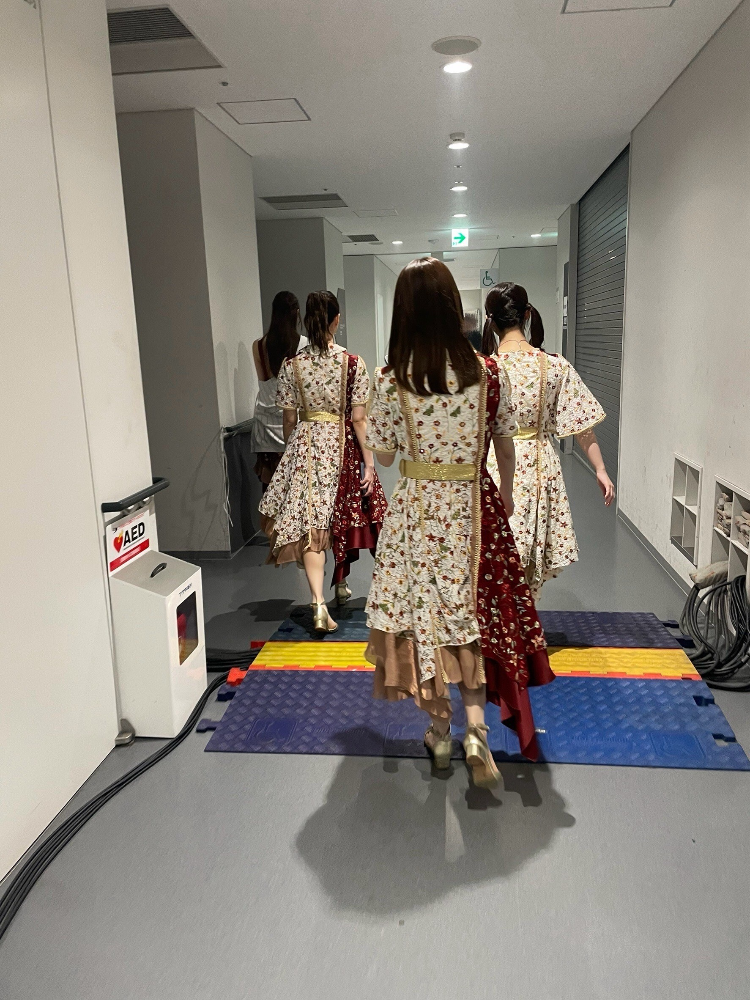
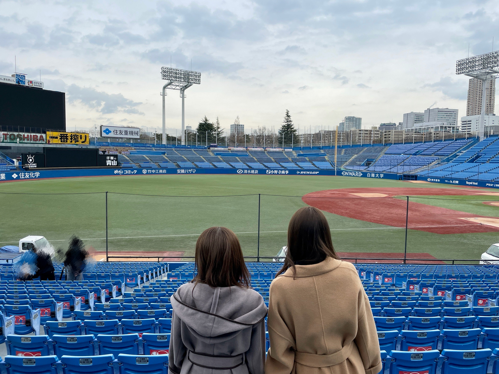
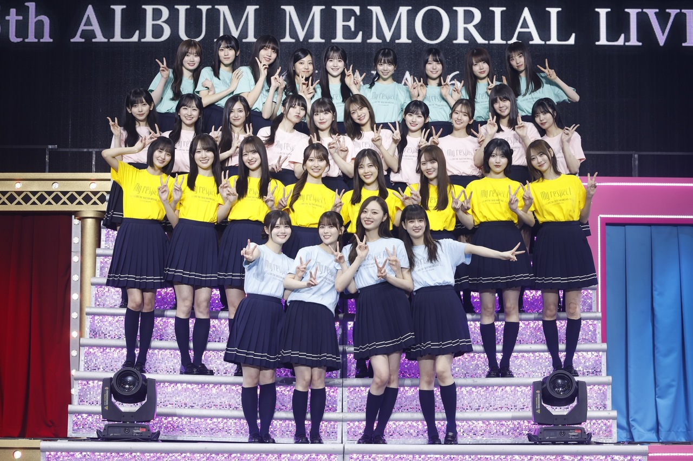
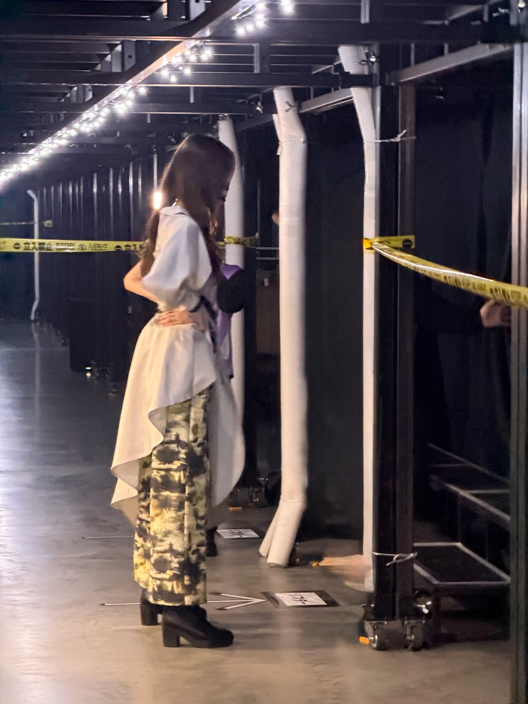
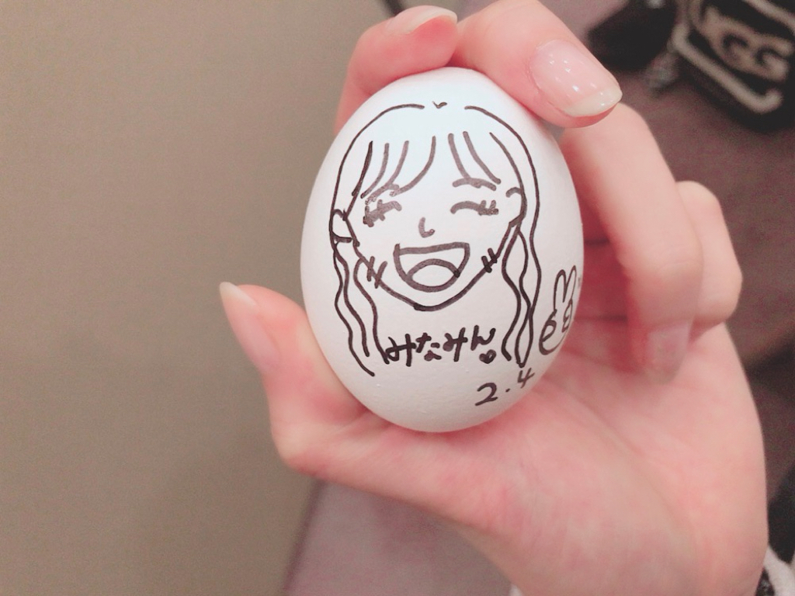

全部が美しさに見えた
皆様いかがお過ごしですか？
4Days、とても楽しかったです。
ステージ好きだなあと思ったし、
みんなのことずーっとみていたいなーと、思いました
好きが止まらなかったですね
好きというよりも、愛してますね、
こんなにも心を動かしてくれる
このグループにいる人達はみーんな、
すごいのです(^^)
今日は、皆様にお知らせがあります。
41枚目シングルの活動をもって
乃木坂46を、卒業します。
もう誰一人として、
驚きはないかもしれないですね(^^)
先に言います！長くなります！
ひとりよがりな文章だけど、今日だけは許してください。
少し、懐かしい話をします。
当時17歳、乃木坂に加入してすぐのある日
父と母に乃木坂を知ってもらうために
当時公開されて間もなかった映画
｢悲しみの忘れ方｣を観てもらいました。
映画を見終えた後、
娘がこれから味わうであろう
美しくも残酷かもしれない未来と
芸能界へ足を踏み入れるということの現実を
くっきりと感じたであろうときの
希望混じりに寂しそうに笑う両親の顔が、
今でも忘れられません。
姉は唯一、この世界へ入ることを
一度止めてくれた大切な人であり
弟は、幼いながらも 私がステージに立つことへ
誰よりも輝かしい目を向けてくれていました。
自分の人生が変わると同時に
大切な人の未来も変えることになった、
それが、この世界へ足を踏み入れたとき
私が一番最初に感じた重さだったかなあ。
でも、この責任があったから私は
壊れず強くあれたのだと思います(^^)
卒業が頭によぎったのは、
もう何年も前だったと思います。
先輩や同期、そして後輩たちの卒業を見送り
あまりにも眩しく見える背中を眺めながら
私はいつこの選択をするのだろうと、考えていました。
２０２３年の２月２２日、
キャプテンというバトンを受け取ったあの日
卒業という選択は、自分の中で一度無くしました。
乃木坂人生また一からスタートする気持ちで
より乃木坂46と真正面から向き合い
それまでよりも、ここにかける時間と想いを費やしてきたつもりです。
私は、ここ数年のグループの大きな転換期に
こんなにも愛おしく思える同期と後輩たちと共に
戦えたことが、そばにいられたことが
ただただ、なによりも、幸せでした。
日々頼もしくなる大切な後輩たちの姿を眺めながら
みんながより、
自信と欲を持ち始めてくれたなと思った今
卒業を決めました。
色んなことがあった9年半！
高校生だった私も、27歳になりました。
あの日から私は、何が変わって
何が変わっていないのか
ふと考えるときがあります。
私は自分を鎧で取り繕うほど器用な人間ではなく
いつだってありのままで戦うことしか出来ず
傷つくことも当たり前に引き受けながら、
ここまでやって来ました。
ずっと笑えていたわけでもない
常に堂々とできていたわけでもない
風当たりの強さを知っているが故に
今だってステージに立つ時の手の震えは
あの頃と何も変わらずあるのですが
それでも、
自分の中の信念みたいなものは
いつだって変わらずに、9年半
強く持ち合わせていました。
しんどくても手放さなかったし
お仕事をする上で選び続けた姿勢があったし
乃木坂としてはみ出さない形を持ち続けたし
自分が特別でないと分かっていたからこそ、
崩さずに、持っていた在り方がありました。
つらくて仕方がなかった時、孤独だった時、
逃げたいと思ったことはあっても
辞めようなんて選択はありませんでした。
大好きな乃木坂を、
今なら大好きなまま、去ることができそうです(^^)
私は、ここに集まる人が、大好き！
チーム乃木坂スタッフの皆様(^^)
私は、ステージで笑えなくなったとき、
スタッフの皆様にスポットライトを当てて歌ってた。
まずは誰よりも
近くにいるこの人たちの幸せをと思ったし、
何よりも私たちを見て、笑っていて欲しかった。
私たちを愛してもらうために、
この人達を誰よりも愛したいと思っていました。
色んなことがありました。
いつだって見捨てずに、愛と熱と鞭をもって、
私たちを乃木坂46として送り出してくれました。
今近くにいてくれているスタッフの皆様も
ここを去っていったスタッフの皆様も、
誰一人として忘れずにいたいです。
考えれば、涙が出るくらい、
愛せるスタッフの皆様です(^^)
17歳の小娘から、
27歳のより生意気になった小娘を、
ここで輝かせてくれてありがとうございました！
敬愛する先輩方(^^)
乃木坂が愛される理由の全ては
乃木坂を作った先輩方の人間力でしかないと思っています。
惹かれた理由がなんであれ、
どっぷりハマったその先にそれ以上のものが無いと、
長くは愛せないと思うんです。
何よりも私は、
先輩方の内側にある優しさや強さや
ここにしかない温かさが、大好きだったんです。
先輩方が全員ご卒業されたあの日、
ここからが私のやるべき事の本番が始まるんだと、気づきました。
大好きな先輩方が生きた乃木坂46、
乃木坂46だけにあるもの、乃木坂46というもの
私はその意志を誰よりも強く持っていたいと思ったし、
しつこいくらいこだわってやると、誓った！
頑固にだってなったし、孤独を感じたときもあった、
間違った日だってあった、でも
絶対に何ひとつこぼしたくない
失いたくないと思った。
あの日からの私の心の支えはいつだって
大好きな先輩たちとの
生き生きとした思い出たちでした(^^)
今でも私の憧れの女性たちです。
そして、ファンの皆様！
まずは、
ファンの皆様がいなければ私たちは誰一人として、
乃木坂46として生きられないのです。
いつも、本当にありがとうございます。
きっと確定していなくても
色々頑張ってくれていたよね、
その気持ちも どこへいってしまうのだろうとか
こんな私でも、きっと
誰かの人生の選択の一部だったはずなんです。
それを分かっていたからこそ
この選択を伝えるまでドキドキだったのだけど、
私のファンの皆様のこと思い浮かべたら
なんだか妙に安心しちゃって(^^)
察していただろうに 待っていてくれた皆だから
いつ私がこの選択をしようと
きっと、笑って受け止めてくれるはずで。
いつもありがとう。感謝でいっぱいです。
最近は、他の子のファンの方も
私のところにお話しに来てくれて
色んな言葉をかけてくれるんです！
梅が笑ってると安心する、とか
キャプテンでいてくれてありがとう、とか
私にはもったいないくらいの言葉をたくさんいただいて
私、それでどれだけ救われ、頑張れたか(^^)
どんなことも、
いただいた言葉たちを思えばへっちゃらでした。
私たちの抱えている感情は
痛いほどファンの皆様に伝わるんだなと思った。
だから私はいつだって
前を向いていようと決めたの！
前向きな言葉を発していこうと決めたの！
ありがとう。皆さん！！
これからも、よろしく頼みました。
最後に、
残りの時間で
たくさんの感謝は伝えていくつもりだけど
年齢や期を問わず、
心からみんなのことを尊敬しています。
無邪気に笑う日もあれば、
笑えていない日もあって。
毎日、時間が経つたびに コロコロと変わる表情と
持ち合わせる感情が変わるみんなが、大好きでした。
皆が心悩ませる先はきっと
いつだって乃木坂だったはずだから
ここで戦ってくれる皆の姿は、
どんな姿も私にとっては宝物のように映っていました。
みんなも不安だったろうに
こんなに頼りない私にいつも笑顔を向け
拙い言葉に耳を傾け、さり気なく背中を支えてくれ
腕を掴み手を握り、いつでもそばに居てくれました。
かっこよく引っ張れなくて、ごめんね
でも、私はみんなだったから毎日頑張れた！
みんなのもとで、より、
みんなと言葉を交わせる役割をいただけたことに
乃木坂人生意味があったと思えるくらい
感謝しています。
誰一人として私にはなくてはならない存在です(^^)
みんなの不安な涙や
悲しい涙は見たくない。
どうにか幸せな涙で溢れる未来であってほしい。
そうあれるように、
私にできることが残されているのならば
変えていきたい！頑張るね。




5月21日に 卒業コンサートをさせて頂くことになりました。
私にはもったいなさすぎる時間と場所ですが
乃木坂46と名乗れる時間を
最後まで誇らしく、ステージに立ちたい。
どうか、皆様会いに来てください(^^)
私は乃木坂46なので
乃木坂46として、私が信じる大好きな乃木坂の形を
心を込めてお届けします。
以上です！読んでくれてありがとう！
卒業をみんなに伝えた帰りの車
高速道路の同じ間隔で光るライトを見ながら
涙が止まらなくなったのを思い出しました。
なんで泣いてんねん！と思いながら、
あー、終わりまでの時間が始まったぞ、と
寂しくなっちゃったんだあ
限られたタイムリミットを切ったのは自分なのに
大切なものを手放すということは
こういう事なんだと、実感した日
とにかく、最後の日まで
みんなのことを、乃木坂のことを
考え続けたい
よろしくお願いします。
それでは！また！

Original：https://www.nogizaka46.com/s/n46/diary/detail/104407?ima=4930&cd=MEMBER